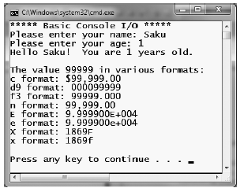

Almost all of the example applications created over the course of the initial chapters of this book make extensive use of the System.Console class. While it is true that a console user interface (CUI) is not as enticing as a graphical user interface (GUI) or web-application, restricting the early examples to console programs will allow us to keep focused on the syntax of C# and the core aspects of the .NET platform, rather than dealing with the complexities of building GUIs or web sites.
As its name implies, the Console class encapsulates input, output, and error-stream manipulations for console-based applications. Table 3-2 lists some (but definitely not all) members of interest.
Table 3-2. Select Members of System.Console
| Member | Meaning in Life |
|---|---|
| Beep() | This method forces the console to emit a beep of a specified frequency and duration. |
| BackgroundColor ForegroundColor | These properties set the background/foreground colors for the current output. They may be assigned any member of the ConsoleColor enumeration. |
| BufferHeight BufferWidth | These properties control the height/width of the console's buffer area. |
| Title | This property sets the title of the current console. |
| WindowHeight WindowWidth WindowTop WindowLeft | These properties control the dimensions of the console in relation to the established buffer. |
| Clear() | This method clears the established buffer and console display area. |
In addition to the members in Table 3-2, the Console type defines a set of methods to capture input and output, all of which are static and are therefore called by prefixing the name of the class (Console) to the method name. As you have seen, WriteLine() pumps a text string (including a carriage return) to the output stream. The Write() method pumps text to the output stream without a carriage return. ReadLine() allows you to receive information from the input stream up until the Enter key is pressed, while Read() is used to capture a single character from the input stream.
To illustrate basic I/O using the Console class, create a new Console Application project named BasicConsoleIO and update your Main() method to call a helper method named GetUserData():
class Program { static void Main(string[] args) { Console.WriteLine("***** Basic Console I/O *****"); GetUserData(); Console.ReadLine(); } }
Implement this method within the Program class with logic that prompts the user for some bits of information and echoes each item to the standard output stream. For example, we could ask the user for his or her name and age (which we will treat as a text value for simplicity, rather than the expected numerical value) as follows:
static void GetUserData() { // Get name and age. Console.Write("Please enter your name: "); string userName = Console.ReadLine(); Console.Write("Please enter your age: "); string userAge = Console.ReadLine(); // Change echo color, just for fun. ConsoleColor prevColor = Console.ForegroundColor; Console.ForegroundColor = ConsoleColor.Yellow; // Echo to the console. Console.WriteLine("Hello {0}! You are {1} years old.", userName, userAge); // Restore previous color. Console.ForegroundColor = prevColor; }
Not surprisingly, when you run this application, the input data is printed to the console (using a custom color to boot!).
During these first few chapters, you may have noticed numerous occurrences of tokens such as {0} and {1} embedded within various string literals. The .NET platform support a style of string formatting slightly akin to the printf() statement of C. Simply put, when you are defining a string literal that contains segments of data whose value is not known until runtime, you are able to specify a placeholder within the literal using this curly-bracket syntax. At runtime, the value(s) passed into Console.WriteLine() are substituted for each placeholder.
The first parameter to WriteLine() represents a string literal that contains optional place-holders designated by {0}, {1}, {2}, and so forth. Be very aware that the first ordinal number of a curly-bracket placeholder always begins with 0. The remaining parameters to WriteLine() are simply the values to be inserted into the respective placeholders.
Note If you have more uniquely numbered curly-bracket placeholders than fill arguments, you will receive a format exception at runtime.
It is also permissible for a given placeholder to repeat within a given string. For example, if you are a Beatles fan and want to build the string "9, Number 9, Number 9", you would write:
// John says... Console.WriteLine("{0}, Number {0}, Number {0}", 9);
Also know that it is possible to position each placeholder in any location within a string literal, and it need not follow an increasing sequence. For example, consider the following code snippet:
// Prints: 20, 10, 30 Console.WriteLine("{1}, {0}, {2}", 10, 20, 30);
If you require more elaborate formatting for numerical data, each placeholder can optionally contain various format characters. Table 3-3 shows the most common formatting options.
Table 3-3. .NET Numerical Format Characters
| String Format Character | Meaning in Life |
|---|---|
| C or c | Used to format currency. By default, the flag will prefix the local cultural symbol (a dollar sign [$] for U.S. English). |
| D or d | Used to format decimal numbers. This flag may also specify the minimum number of digits used to pad the value. |
| E or e | Used for exponential notation. Casing controls whether the exponential constant is uppercase (E) or lowercase (e). |
| F or f | Used for fixed-point formatting. This flag may also specify the minimum number of digits used to pad the value. |
| G or g | Stands for general. This character can be used to format a number to fixed or exponential format. |
| N or n | Used for basic numerical formatting (with commas). |
| X or x | Used for hexadecimal formatting. If you use an uppercase X, your hex format will also contain uppercase characters. |
These format characters are suffixed to a given placeholder value using the colon token (e.g., {0:C}, {1:d}, {2:X}). To illustrate, update the Main() method to call a new helper function named FormatNumericalData(). Implement this method in your Program class to format a fixed numerical value in a variety of ways.
// Now make use of some format tags. static void FormatNumericalData() { Console.WriteLine("The value 99999 in various formats:"); Console.WriteLine("c format: {0:c}", 99999); Console.WriteLine("d9 format: {0:d9}", 99999); Console.WriteLine("f3 format: {0:f3}", 99999); Console.WriteLine("n format: {0:n}", 99999); // Notice that upper- or lowercasing for hex // determines if letters are upper- or lowercase. Console.WriteLine("E format: {0:E}", 99999); Console.WriteLine("e format: {0:e}", 99999); Console.WriteLine("X format: {0:X}", 99999); Console.WriteLine("x format: {0:x}", 99999); }
Figure 3-5 shows the output for our current application.
Figure 3-5. Basic console I/O (with .NET string formatting)
Beyond controlling how numerical data is formatted, the .NET platform provides additional tokens that may appear in a string literal that controls spacing and positioning of content. Furthermore, the tokens applied to numerical data can be applied to other data types (such as enumerations or the DateTime type) to control data formatting. Also, be aware that it is possible to build a custom class (or structure) that defines a custom formatting scheme through the implementation of the ICustomFormatter interface.
You'll see additional formatting examples where required throughout this text; however, if you are interested in digging into .NET string formatting further, look up formatting types within the .NET Framework 4.0 SDK documentation.
On a final note, be aware that the use of the .NET string formatting characters is not limited to console programs. This same formatting syntax can be used when calling the static string.Format() method. This can be helpful when you need to compose textual data at runtime for use in any application type (e.g., desktop GUI app, ASP.NET web app, XML web services).
For example, assume you are building a graphical Windows Forms desktop application and need to format a string for display in a message box.
static void DisplayMessage() { // Using string.Format() to format a string literal. string userMessage = string.Format("100000 in hex is {0:x}", 100000); // You would need to reference System.Windows.Forms.dll // in order to compile this line of code! System.Windows.Forms.MessageBox.Show(userMessage); }
Notice how string.Format() returns a new string object, which is formatted according to the provided flags. After this point, you are free to use the textual data as you see fit.